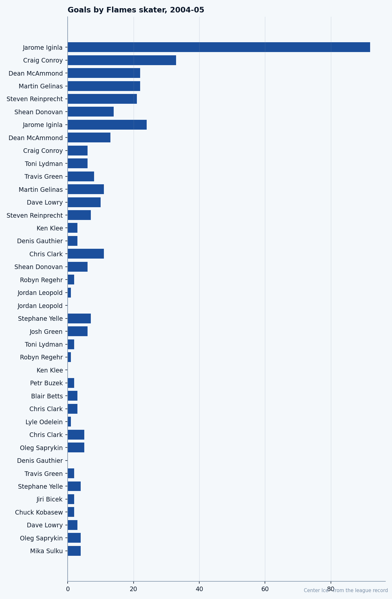

CGY
CGYTwenty-Four Goals and Nowhere to Go: Jarome Iginla's winter in Calgary
The Richard Trophy is on his shelf, the goals are coming at 0.96 a game, and his team has lost six straight. The last year of $6.50M is being spent in last place.
 Tomáš VránaProfile writer · The Sweater
Tomáš VránaProfile writer · The Sweater Jarome Iginla91 has 24 goals in 25 games. Nobody in this league has scored more often, and nobody in this league has done it on a team like this one.
Jarome Iginla91 has 24 goals in 25 games. Nobody in this league has scored more often, and nobody in this league has done it on a team like this one.
Calgary is 9-19-2, 22 points, six straight losses. The Flames have conceded 130 goals in 31 games and scored 98. Iginla has 24 of those 98, which is 24.5 percent of them, and he is in on 40.8 percent of his club's offence. He won the Maurice Richard Trophy last season with 92 goals in 73 games. This season he is scoring at a pace only a handful of men in the league can match, in the final year of a $6.50M contract, on a team that is the worst in the West.
The room is where the numbers stop making sense. Nobody there would trade places with him.
The goaltender who changed his mind
Iginla did not start as a scorer. He grew up in St. Albert, raised by his mother and her parents after his parents divorced when he was two, and his grandfather is the one who got him to the rink. He admired Grant Fuhr, and so for his first two years of organized hockey he played goaltender. He switched to the right wing, led the Alberta Midget Hockey League in scoring as a 15-year-old with 87 points, and went to Kamloops, where he won two Memorial Cups and said of the Blazers' expectation of success: "When you put on a Blazers jersey, it's like putting on the Canadiens'. You've got to perform."
Dallas took him 11th overall in 1995. On December 20 of that year the Stars traded him to Calgary, along with Corey Millen, for the rights to Joe Nieuwendyk. He has been a Flame ever since, the way the record has known him.

The gap behind him is the story of the club.  Dean McAmmond82's 13 goals are next on the Calgary list, and McAmmond's 38 points are the closest anyone gets to Iginla's 40. The next regulars behind them are
Dean McAmmond82's 13 goals are next on the Calgary list, and McAmmond's 38 points are the closest anyone gets to Iginla's 40. The next regulars behind them are  Craig Conroy82 at 36 and
Craig Conroy82 at 36 and  Martin Gelinas80 at 23.
Martin Gelinas80 at 23.  Roman Turek86 is an 80 in the Book, and the goaltending has been what a 130-goals-against line says it has been.
Roman Turek86 is an 80 in the Book, and the goaltending has been what a 130-goals-against line says it has been.
The pace he is on
| Skater | Club | GP | Goals | Goals per game |
|---|---|---|---|---|
 Bill Guerin85 Bill Guerin85 | DAL | 32 | 36 | 1.13 |
 Zigmund Palffy81 Zigmund Palffy81 | LA | 30 | 32 | 1.07 |
 Markus Naslund89 Markus Naslund89 | VAN | 31 | 33 | 1.06 |
 Teemu Selanne81 Teemu Selanne81 | COL | 30 | 31 | 1.03 |
 Peter Forsberg89 Peter Forsberg89 | COL | 30 | 30 | 1.00 |
 Joe Thornton92 Joe Thornton92 | BOS | 30 | 30 | 1.00 |
 Sergei Fedorov90 Sergei Fedorov90 | ANA | 31 | 31 | 1.00 |
| Jarome Iginla | CGY | 25 | 24 | 0.96 |
Every man above him on that list plays for a club with a winning record, or a playoff hope. Iginla's 0.96 comes in 25 games, fewer than any of them, on a club that has lost six in a row and plays its home games before a building that remembers what the team was.
The Book has him at 85 overall today, a point above his base on the Development Index. His strongest grades are the ones you would give a man who scores from the top of the crease: 91 in shooting while pressed, 90 in speed, 89 in balance, 88 in the hero grade the Bureau keeps. A 27-year-old whose body has not failed him, playing the position he changed to because a goaltender in Edmonton made him want to stand in net and he could not stay there.
What the room says
He lost 6-2 in Vancouver on Wednesday night, in a building that used to be his side of the country. The men around him would tell you the same thing on any night of this streak: he is the first one to the rink, he does not talk about the goal race, and after a loss like that one he is the veteran reassuring the young wingers instead of the one being consoled.
A goal when you lose by four: you take it to the bus and you leave it there. That is the register the room uses for him. He is owed nothing by this team on the ice, and he is owed a great deal in the standings, and he keeps showing up for the practice the way he always has.
A player this good, this durable, on a club this bad, in a contract year, becomes a story that the league's other 29 general managers read every morning. The trade that brought him here, for a disgruntled star's rights, is the kind of trade a franchise builds its century on. He has been the franchise ever since.
A winter like this one, on a team that has lost six straight and given up 130 in 31, can spend the best goal-scoring season of a man's life with nothing to show for it but a number no one else in the league has reached.
He has 24 goals in 25 games, and the streak is six.